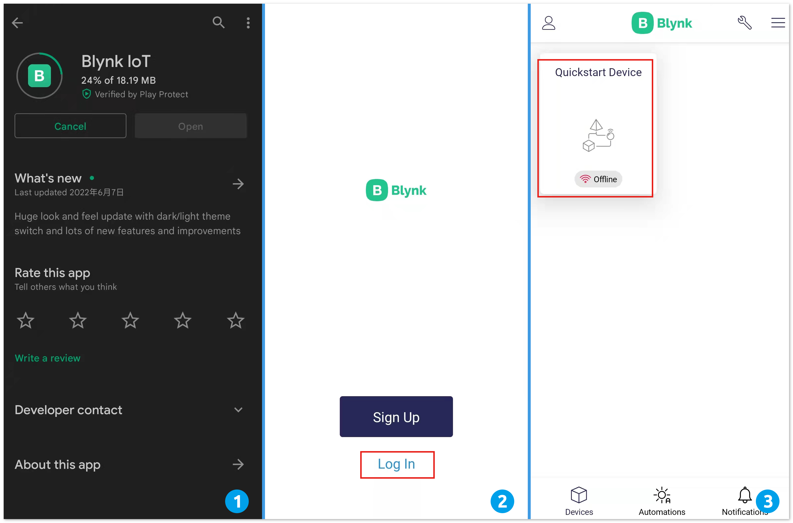
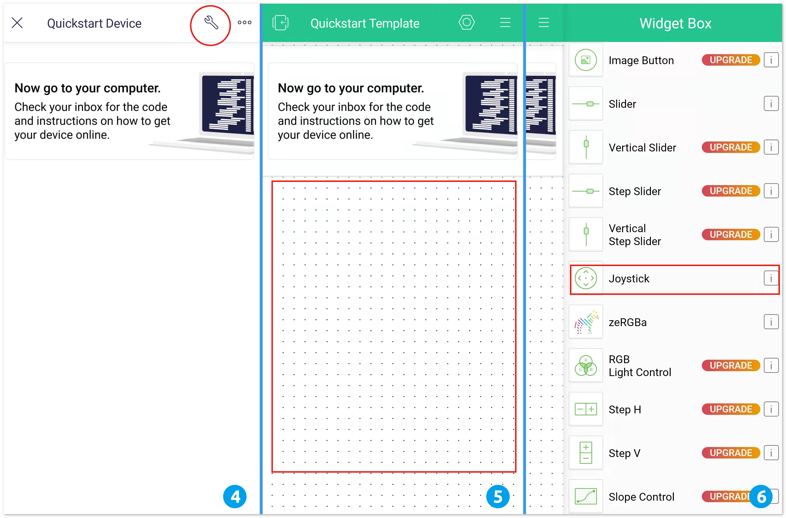

Note
Hello, welcome to the SunFounder Raspberry Pi & Arduino & ESP32 Enthusiasts Community on Facebook! Dive deeper into Raspberry Pi, Arduino, and ESP32 with fellow enthusiasts.
Why Join?
Expert Support: Solve post-sale issues and technical challenges with help from our community and team.
Learn & Share: Exchange tips and tutorials to enhance your skills.
Exclusive Previews: Get early access to new product announcements and sneak peeks.
Special Discounts: Enjoy exclusive discounts on our newest products.
Festive Promotions and Giveaways: Take part in giveaways and holiday promotions.
👉 Ready to explore and create with us? Click [here] and join today!
How to use Blynk on mobile device?
Note
As datastreams can only be created in Blynk on the web, you will need to reference different projects to create datastreams on the web, then follow the tutorial below to create widgets in Blynk on your mobile device.
Open Google Play or APP Store on your mobile device and search for “Blynk IoT” (not Blynk(legacy)) to download.
After opening the APP, login in, this account should be the same as the account used on the web client.
Then go to Dashboard (if you don’t have one, create one) and you will see that the Dashboard for mobile and web are independent of each other.

Click Edit Icon.
Click on the blank area.
Choose the same widget as on the web page, such as select a Joystick widget.

Now you will see a Joystick widget appear in the blank area, click on it.
Joystick Settings will appear, select the Xvalue and Yvalue datastreams you just set in the web page. Note that each widget corresponds to a different datastream in each project.
Go back to the Dashboard page and you can operate the Joystick when you want.